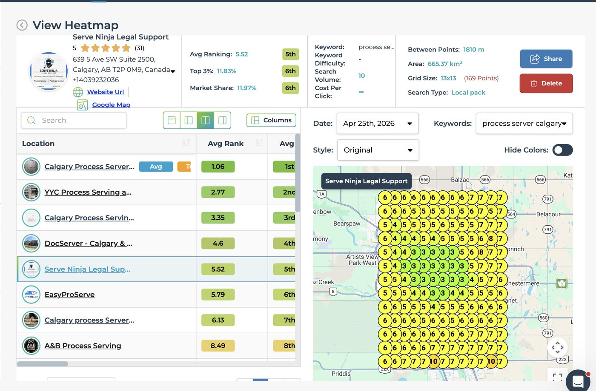
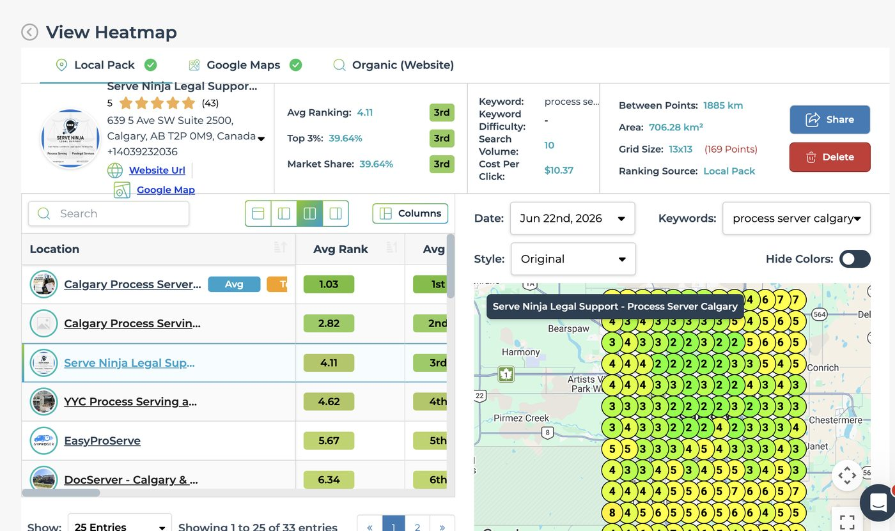

The local search build for a Calgary process server
Serve Ninja Legal Support is a process serving and legal support business in Calgary. Here is the problem we started with, the work we ran, and what a 13 by 13 grid of 169 points read in April and again in June 2026.
Sixth to third in Calgary
LeadSnap scanned the keyword process server calgary on a 13 by 13 grid, 169 points across Calgary. Flip the toggle to see it read on 25 April 2026 and again on 22 June 2026, 58 days apart. Same keyword, same listing, same Local pack layer, same 169 point grid at both ends. The one thing that moved is the ground covered: April covers 665.37 km² and June covers 706.28 km², so the after read is a 6.15% larger area. The gain was measured over more ground, not less. Both areas and both layers are printed on the exports below.
Serve Ninja Legal Support639 5 Ave SW, Calgary, Alberta
Scanned 25 April 2026, Local pack
Position in market is the place LeadSnap prints beside market share and top 3 coverage: 6th in April, 3rd in June. The June export lists 33 process servers on this keyword, so third is third of 33. The April export is cut off above its own entries line, so April's field size is not claimed here.


In numbers
The move, in three figures
3rd
Position in market
Third of the 33 process servers the 22 June export lists on this keyword, up from 6th on the 25 April read
39.64%
Market share
Up from 11.97% on 25 April, on the same 169 points read over a 6.15% larger area, 665.37 km² to 706.28 km²
39.64%
Of the grid in the top 3
Up from 11.83% on the 25 April read, both scans Local pack
- Services engaged
- Local SEO, Google Business Profile
- Service area
- Calgary, Alberta
- Scans compared
- 25 April 2026 against 22 June 2026, both Local pack
The challenge
Legal support is a map pack category
Somebody who needs papers served is not browsing. They have a deadline, they search once, and they call one of the businesses sitting in the top block of the map. Everything under that block competes for what is left. For a small legal support business that top block is not a nice to have, it is the channel.
Calgary makes that harder than a compact city does. A profile can look healthy at its own address and disappear entirely for somebody searching from a quadrant across the city. Local rank is not one number. It is measured cell by cell across a grid, and the holes only show up once you actually scan it.
The category is also crowded and hard to tell apart. Process servers, paralegals, court agents and national filing services all answer the same searches, and the listings read almost identically to anyone skimming. That leaves relevance, proximity and prominence doing the work, because there is no budget lever that fixes it.
What we did
The same four levers, in the same order
Google Business Profile first. Primary category, secondary categories, service list, service area, hours, description. All of it set the way Google read it, not the way an owner would write it. Photos went up on a schedule. Posts went out on a schedule. The profile was worked every week instead of being filled in once and left alone. On a category this tight, the profile is the single biggest input into where a pin lands.
The website second. A page for every service actually sold, and a page for every part of the city actually covered. Area pages were written from real research into the area. Never spun from one template with the name swapped out. Near duplicate pages do not rank and do not convert. Schema, headings and index submission were part of the build, not a cleanup pass afterwards.
Interlinking third. Services and areas were wired into a clean silo. Every page had a route in from above and a route across to the pages beside it. A page nothing links to is a page Google has to find twice and trust once.
Citations fourth. Name, address and phone were matched across the directory set so nothing on the open web contradicted the profile. Inconsistent listings are quiet drag, and they are cheap to settle once the profile itself is correct.
Google Ads when a client wants them. Exact match only, tightly themed ad groups, calls tracked, judged on booked work rather than clicks. Message us on WhatsApp if that is the piece you need.
 Get started
Get started
Stop being invisible on Google
Send us your business. You get back a free three minute video: where you sit on the local map, and what is holding the position down.
One business per category per service area. No long term contract.